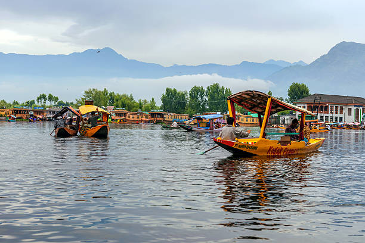
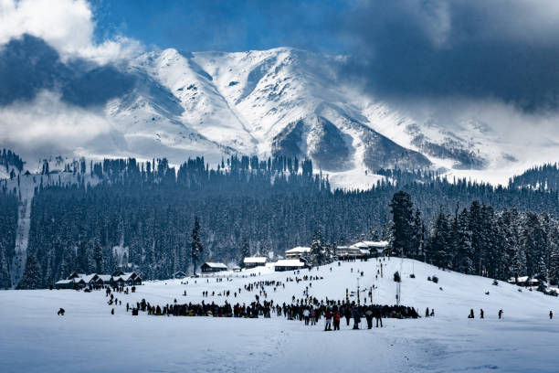
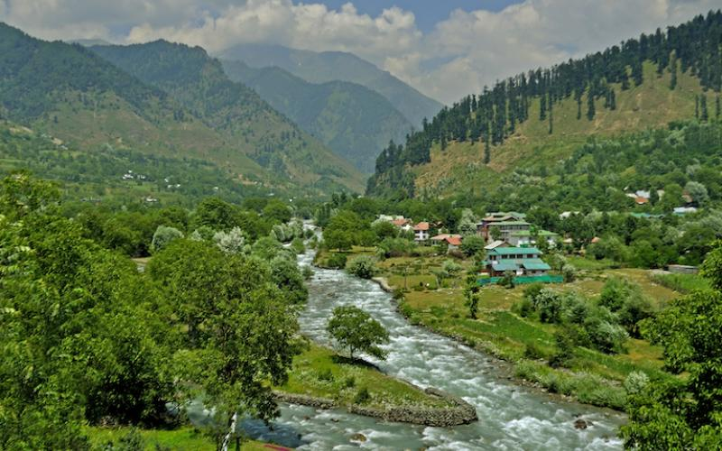
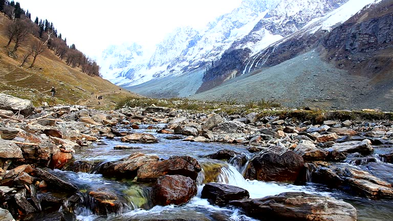
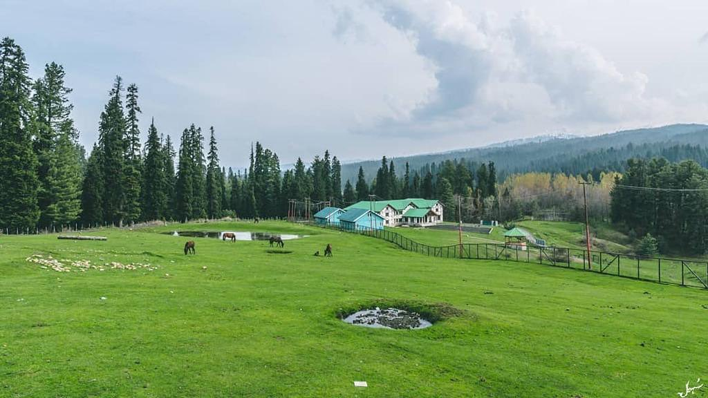
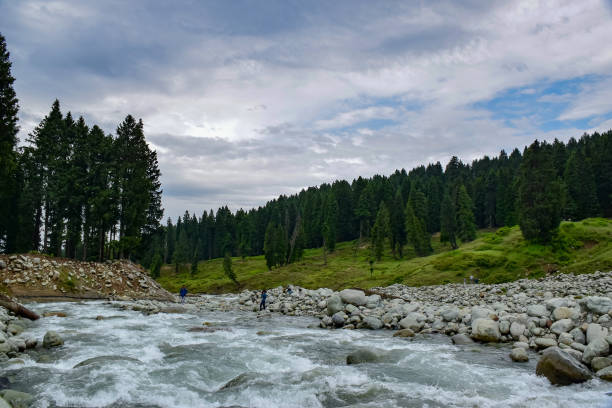

Srinagar is a beautiful city in Jammu and Kashmir, known for its scenic beauty. 🏔️It is famous for Dal Lake, Shikara rides, and houseboats. 🚤Srinagar is also known for its gardens, handicrafts, and rich culture. 🌸

Gulmarg is a beautiful hill station in Jammu and Kashmir, famous for its snowy mountains. 🏔️It is popular for skiing, snowboarding, and the Gulmarg Gondola. ❄️It is surrounded by green meadows and offers stunning views of nature.

Pahalgam is a beautiful hill station in Kashmir, surrounded by green valleys and snow-capped mountains.It is famous for its scenic beauty, rivers,forests,andpeacefulatmosphere.Pahalgam is also a popular destination for trekking, sightseeing, and nature lovers.

Sonamarg is a beautiful hill station in Kashmir, famous for its snow-covered mountains.It is known as the “Meadow of Gold” because of its stunning golden meadows.Tourists visit Sonamarg for its scenic views, trekking, and nearby glaciers. 🏔️✨

Yusmarg is a peaceful hill station in Kashmir, surrounded by beautiful green meadows and forests. 🌲It is known for its scenic mountains, fresh air, and natural beauty. 🏔️Yusmarg is a perfect place for nature lovers, trekking, and relaxing. ✨

Doodhpathri is a beautiful meadow in Kashmir, surrounded by lush green hills and forests. 🌿It is famous for its peaceful atmosphere, flowing streams, and stunning natural beauty. 🏔️It is a great place for sightseeing, picnics, and enjoying nature. ✨